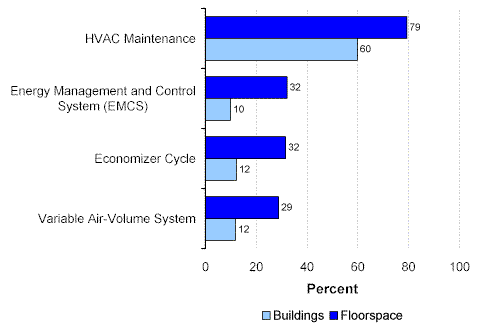
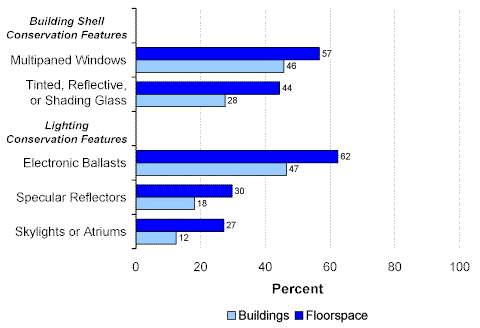
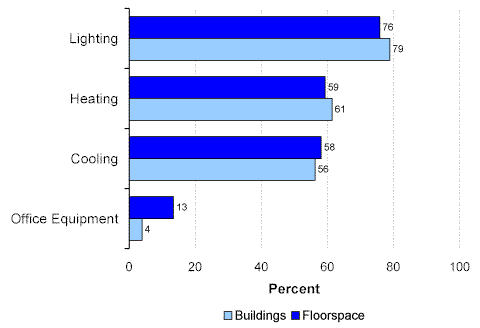

Topics:
Energy Sources and End Uses
Conservation Features and Practices
Conservation Features and Practices
The 1999 CBECS collected information about HVAC (heating, ventilation, and air-conditioning) system, building shell, and lighting conservation features and practices plus information on off-hour reduction of end-use equipment. In general, commercial buildings that were larger than average were more likely to have used these conservation features or measures.
HVAC Conservation Features and Practices
Among HVAC conservation features and practices, commercial buildings owners and managers widely performed maintenance on their HVAC systems (Figure 1). Approximately the same percentage of buildings and floorspace were served by other HVAC conservation features.
Figure 1. HVAC Conservation Features and Practices in Commercial Buildings, 1999 Energy Information Administration
Commercial Buildings Energy Consumption Survey
Building Shell and Lighting Conservation Features
Just under half of buildings (46 percent) and more than half of floorspace (57 percent) had multipaned windows (Figure 2). The most predominate lighting conservation feature was the use of electronic ballasts. The use of the other two lighting conservation features—specular reflectors and skylights or atriums—was similar.
Figure 2. Building Shell and Lighting Conservation Features in Commercial Buildings, 1999 Energy Information Administration
Commercial Buildings Energy Consumption Survey
Off-Hour Equipment Reduction
The reduction of equipment use during off-hours to conserve energy (by changing the temperature setting or reducing the use of equipment) was commonly undertaken in buildings (Figure 3). In particular, it was widely practiced for lighting (76 percent for buildings and 79 percent for floorspace). Commercial buildings reduced their use of heating and cooling during off-hours about equally. Reduction in the use of office equipment was not widely practiced.
Figure 3. Off-Hour Equipment Reduction in Commercial Buildings, 1999 Energy Information Administration
Commercial Buildings Energy Consumption Survey
Return to:
“Commercial Buildings Characteristics”
Specific questions may be directed to:
Alan Swenson
alan.swenson@eia.doe.gov
Release date: May 21, 2002
http://www.eia.gov/consumption/commercial/data/archive/cbecs/char99/conservation.html
If you are having any technical problems with this site, please contact the EIA webmaster at wmaster@eia.doe.gov.